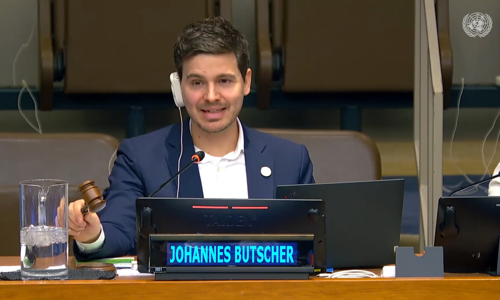

With over a decade of experience, I have built strong connections with civil society organizations and developed an in-depth understanding of United Nations processes and regional fora. My work has been shaped by extended periods in the Americas, time in Geneva, and many years in Brussels, gaining detailed knowledge of EU institutions.
Fluent in three UN languages, I have extensive experience collaborating with a wide range of actors and institutions across international and regional platforms.
Supporting grassroots voices from a second row seat, often literally during High-Level UN debates, and expert NGOs that carry specialized knowledge to bridge the knowledge gap. I recognize how Agenda 2030, ongoing UN reforms such as UN 80 and the Pact for the Future, work in harmony with Geneva-based Special Procedures and other human rights instruments. My role is to ensure effective engagement with the UN, connecting local initiatives to global decision-making processes.

In my professional capacity, I support partners in implementing their work at the national and regional level, while ensuring that their results, innovations, and best practices are shared with global decision-makers. I serve as a connector and enabler between complex multilateral institutions and civil society organizations, and occasionally individual researchers, filling a much-needed void. I am committed to contributing to a multilateral global order in which civil society can and must play a central role.

On occasion, I take responsibility for presenting and advocating in the front row. My approach is guided by the principle that representation and advocacy should amplify the voice and expertise of those I support, ensuring that interventions are strategic, contextually appropriate, and aligned with each partner’s objectives and long-term goals.